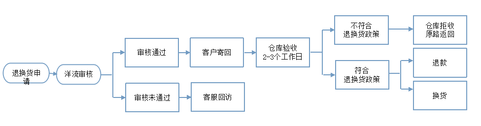
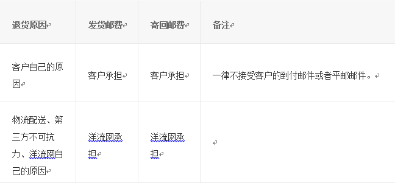

首页 > 帮助中心
售后服务
洋流网为您提供了在线受理退货/换货服务，您只需要登录您的个人账户，在“我的订单”页面中针对商品在线 提交申请信息即可。符合退换货政策的商品，您可以申请退货或者换货。
在办理退款前，请确保您的商品符合退货政策。如果售后人员同意了您的退款申请，退款将按照原路径退回。
(1)邮费退还说明  (2)退款到账时间说明在确认商品已寄回到指定地址并签收后，洋流网会在签收后的3个工作日内为您办理退款。款项将按照您支付订单的原路径退回。由于各银行转账日期不同，请您以实际到账时间为准。洋流网将退款申请提交成功后，以短信的方式告知您。